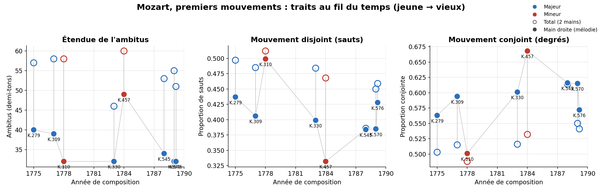
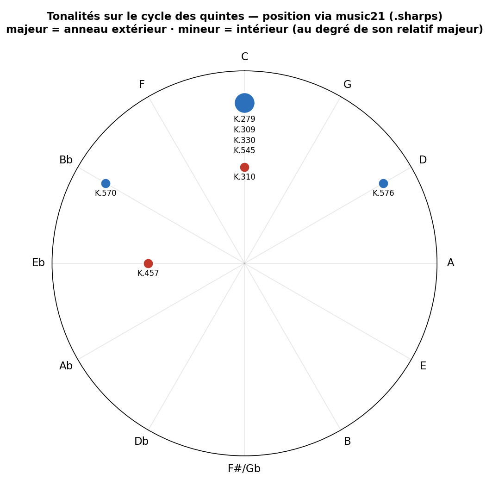
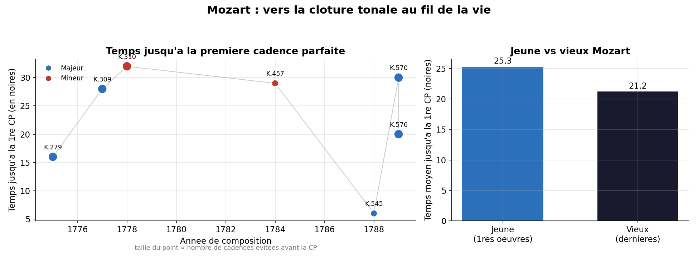

7 premiers mouvements de sonates pour piano · 1775 → 1789
Leo McFadden · Thibault Daraignès
École d'été en humanités numériques
Corpus : K.279 · K.309 · K.310 · K.457 · K.545 · K.570 · K.576 — données PDMX (MusicXML), analyse avec music21 (librairie python).
La détection automatique des cadences est peu fiable : ce choix en fait une force méthodologique, pas une faiblesse.
La détection automatique des cadences est peu fiable : ce choix en fait une force méthodologique, pas une faiblesse.

○ total (2 mains) · ● main droite (mélodie) — rouge = mineur.
K.310 : le caractère « disjoint » vient de la basse (total 0,51)
et non de la mélodie (MD 0,50).

Position calculée via music21 (.sharps). Corpus centré sur
do majeur ; les œuvres tardives (K.570, K.576) s'en éloignent.

Taille du point ∝ cadences évitées avant la CP · rouge = mineur. Pas de tendance simple (n = 7) : forte variabilité ; K.545 (« facile ») atteint la CP très tôt. Cas mineurs (K.310, K.457) : repli sur une cadence imparfaite (CI).
Limites : n = 7 (tendances illustratives, non statistiques) · partitions PDMX = transcriptions d'amateurs · première CP validée à la main.